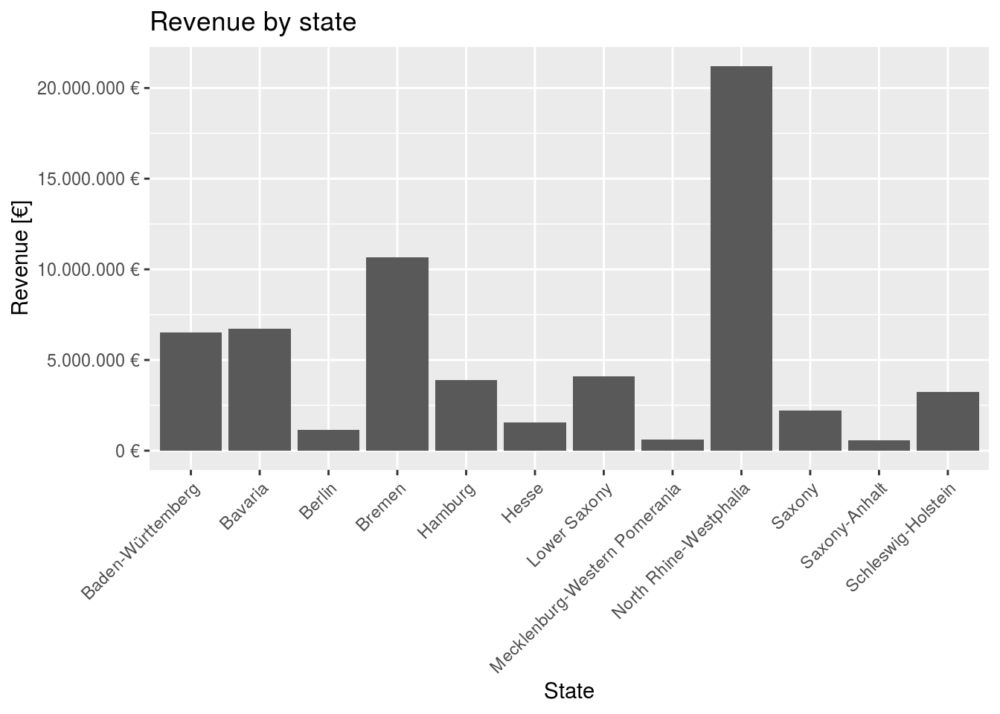

Journal (reproducible report)
Dominic Hinz
2020-12-06
1 Introduction - Bike Stores
Calculate revenues by state and plot. Caculate revnues by state and year and plot.
library('tidyverse')
library('readxl')
#options(tibble.width = Inf) # displays all columns.
#options(tibble.print_max = 10) #show only specific row amount
data_path='/media/dominic/Windows/Users/Dominic/Documents/Studium/A-Master 5. Semester/Data Science/data/DS_101/00_data/01_bike_sales/01_raw_data/'
# read files
bikes=read_excel(paste(data_path,'bikes.xlsx',sep = ''))
shops=read_excel(paste(data_path,'bikeshops.xlsx',sep = ''))
orders=read_excel(paste(data_path,'orderlines.xlsx',sep = ''))
# join all tables into one dataframe
joined=left_join(orders,shops,by=c('customer.id'='bikeshop.id'))
joined=left_join(joined,bikes,by=c('product.id'='bike.id'))
# split location column in city,state column
joined=separate(joined,location,into=c('city','state'),sep=', ')
# split order.date column in year,month,date column
joined=separate(joined,order.date,into=c('year','month','day'),sep='-')
#create column with total price per order
joined$total_price=joined$price* joined$quantity
# get list of unique states, cities, years
states = unique(joined$state)
cities = unique(joined$city)
years = unique(joined$year)
#empty list for revenues,years,states
revenues_vector=c()
years_vector=c()
states_vector=c()
#filter dataframe for all orders in a specific state and year and calculate the corresponding revenue
for (s in states){
#all orders in one state
orders_state=joined[joined$state==s,]
for (y in years){
#all orders in one year in current state
order_year=orders_state[orders_state$year==y,]
#calculate revenue
revenue=sum(order_year$total_price)
#append vectors
revenues_vector=c(revenues_vector,revenue)
years_vector=c(years_vector,y)
states_vector=c(states_vector,s)
}
}
#create dataframe from created vectors
year_state_revenues=tibble(state=states_vector,revenue=revenues_vector,year=years_vector)
# plot revenues over state
p=ggplot(data=year_state_revenues,aes(y=revenue,x=state)) +
geom_bar(stat = "identity") +
theme(axis.text.x = element_text(angle = 45, hjust = 1))+
labs(
title = "Revenue by state",
x = "State", # Override defaults for x and y
y = "Revenue [€]"
)+
scale_y_continuous(labels = scales::dollar_format(big.mark = ".",
decimal.mark = ",",
prefix = "",
suffix = " €"))
plot(p)
# group plot, revenue over year for every state in a separate barplot
p=ggplot(data=year_state_revenues,aes(y=revenue,x=year)) +
geom_bar(stat = "identity") +
theme(axis.text.x = element_text(angle = 45, hjust = 1))+
labs(
title = "Revenue by state",
x = "State", # Override defaults for x and y
y = "Revenue [€]"
)+
scale_y_continuous(labels = scales::dollar_format(big.mark = ".",
decimal.mark = ",",
prefix = "",
suffix = " €")) +
facet_wrap(~state)
plot(p)2 Data Acquisition via API - Star Wars
Acquire data via the Star Wars API. Print the Persons table as example. The other tables are created as well.
library(tidyverse)
library(httr)
library(jsonlite)
# function to provide clean object from url
path_to_object=function (path){
result=GET(path)
content=rawToChar(result$content)
object=fromJSON(content,flatten = TRUE)
return(object)
}
base_url="https://swapi.dev/api/"
base_content=path_to_object(base_url)
# get table names from base categories
tables=names(base_content)
table_list=list()
# loop through every table
for (i in 1:length(tables)){
table_name=tables[[i]]
table_url=base_content[table_name][[1]]
# get content of table
table_content=path_to_object(table_url)
# get amount of instances in table
instance_amount=table_content$count
instances=list()
#loop over every instance and create row for table
for (j in 1:instance_amount){
instance_url=paste(table_url,j,'/',sep='')
instance_content=path_to_object(instance_url)
row=enframe(instance_content)
row=pivot_wider(row)
#collect all rows in list
instances[[j]]=row
}
# combine every row to a table dataframe
table=bind_rows(instances)
#collect all tables in list
table_list[[i]]=table
}
print("print only person table as example (print as tibble was very ugly, I used glimpse() here)")## [1] "print only person table as example (print as tibble was very ugly, I used glimpse() here)"glimpse(table_list[[1]])## Rows: 82
## Columns: 17
## $ name <list> ["Luke Skywalker", "C-3PO", "R2-D2", "Darth Vader", "Leia…
## $ height <list> ["172", "167", "96", "202", "150", "178", "165", "97", "1…
## $ mass <list> ["77", "75", "32", "136", "49", "120", "75", "32", "84", …
## $ hair_color <list> ["blond", "n/a", "n/a", "none", "brown", "brown, grey", "…
## $ skin_color <list> ["fair", "gold", "white, blue", "white", "light", "light"…
## $ eye_color <list> ["blue", "yellow", "red", "yellow", "brown", "blue", "blu…
## $ birth_year <list> ["19BBY", "112BBY", "33BBY", "41.9BBY", "19BBY", "52BBY",…
## $ gender <list> ["male", "n/a", "n/a", "male", "female", "male", "female"…
## $ homeworld <list> ["http://swapi.dev/api/planets/1/", "http://swapi.dev/api…
## $ films <list> [<"http://swapi.dev/api/films/1/", "http://swapi.dev/api/…
## $ species <list> [[], "http://swapi.dev/api/species/2/", "http://swapi.dev…
## $ vehicles <list> [<"http://swapi.dev/api/vehicles/14/", "http://swapi.dev/…
## $ starships <list> [<"http://swapi.dev/api/starships/12/", "http://swapi.dev…
## $ created <list> ["2014-12-09T13:50:51.644000Z", "2014-12-10T15:10:51.3570…
## $ edited <list> ["2014-12-20T21:17:56.891000Z", "2014-12-20T21:17:50.3090…
## $ url <list> ["http://swapi.dev/api/people/1/", "http://swapi.dev/api/…
## $ detail <list> [NULL, NULL, NULL, NULL, NULL, NULL, NULL, NULL, NULL, NU…3 Data Acquisition via Scraping - Bike website
Acquire data via webscraping. Create a small table for model names and prices of mountain bikes.
library(rvest)
library(tidyverse)
#get html for mountainbike category
base=read_html('https://www.rosebikes.de/fahrräder/mtb')
# get html nodes for all bikes
bikes=html_nodes(base,css = 'li.catalog-category-bikes__list-item')
names=list()
euros=list()
cents=list()
i=1
#loop over all bike nodes
for (bike in bikes){
#get text of object with bike name
name=html_text(html_node(bike,css='span.catalog-category-bikes__title-text'))
# remove unnecessary strings from name
name=str_replace_all(name, '\n', '')
# get text of object with bike price
price=html_text(html_node(bike,css='div.catalog-category-bikes__price-title'))
# remove unnecessary strings from price
price=str_replace_all(price, '\n', '')
price=str_replace_all(price, '€', '')
price=str_replace_all(price, 'ab ', '')
price=str_replace_all(price, " ", "")
price=str_replace_all(price,'[.]','')
#split into euro and cent
price_splitted=str_split(price,',')[[1]]
# check if price is available and convert to integer
if (length(price_splitted)==2){
euro=strtoi(price_splitted[[1]])
cent=strtoi(substring(price_splitted[[2]],1,2)) # get only 2 first characters from cent string becaus last whitespace cannot be removed (did not find out why)
}else{
next # skip bike if no price is available
}
#collect all model names and prices
names[[i]]=name
euros[[i]]=euro
cents[[i]]=cent
i=i+1
}
#create datafram from bike models and prices
df=tibble(name=names,euro=euros,cent=cents)
#unnest lists in column
df=unnest(df,cols=c(name,euro,cent))
print(df)## # A tibble: 7 x 3
## name euro cent
## <chr> <int> <int>
## 1 GROUND CONTROL 1699 0
## 2 ROOT MILLER 1999 0
## 3 PIKES PEAK 3099 0
## 4 PSYCHO PATH 1849 0
## 5 THRILL HILL 2599 0
## 6 THRILL HILL TRAIL 2899 0
## 7 SOUL FIRE 2149 04 Data Wrangling - Patent Analysis
Analyze patent data.
4.1 What US company / corporation has the most patents?
library("tidyverse")
library("tidyr")
library("vroom")
# ignore columns with col_skip
col_types <- list(
location_id = col_skip(),
name_first = col_skip(),
name_last = col_skip(),
id = col_character(),
type = col_character(),
number = col_character(),
country = col_character(),
date = col_date("%Y-%m-%d"),
abstract = col_character(),
title = col_character(),
kind = col_character(),
num_claims = col_double(),
filename = col_character(),
withdrawn = col_double()
)
# read all necessary tables
patent_assignee_tbl <- vroom(file = "/home/dominic/Downloads/data/Patent/patent_assignee.tsv",
delim = "\t",
col_types = col_types,
na = c("", "NA", "NULL")
)
assignee_tbl <- vroom(file = "/home/dominic/Downloads/data/Patent/assignee.tsv",
delim = "\t",
col_types = col_types,
na = c("", "NA", "NULL")
)
# filter for US companies/cooperations
assignee_tbl = assignee_tbl %>% filter(type == 2)
# join the data
joined = left_join(patent_assignee_tbl,assignee_tbl, by =c("assignee_id"="id"))
joined = drop_na(joined)
# count the number of patents of each organization
joined = joined %>% group_by(organization) %>% summarize(count=n())
# sort in decreasing order
joined = joined[order(joined$count, decreasing = TRUE),]
joined = drop_na(joined)
# list the top 10 companies
companies = list()
for (i in 1:10){
companies[[i]] = joined$organization[i]
}
print(companies)## [[1]]
## [1] "International Business Machines Corporation"
##
## [[2]]
## [1] "General Electric Company"
##
## [[3]]
## [1] "Intel Corporation"
##
## [[4]]
## [1] "Hewlett-Packard Development Company, L.P."
##
## [[5]]
## [1] "Microsoft Corporation"
##
## [[6]]
## [1] "Micron Technology, Inc."
##
## [[7]]
## [1] "QUALCOMM Incorporated"
##
## [[8]]
## [1] "Texas Instruments Incorporated"
##
## [[9]]
## [1] "Xerox Corporation"
##
## [[10]]
## [1] "Apple Inc."4.2 What US company had the most patents granted in 2019?
library("tidyverse")
library("tidyr")
library("vroom")
# ignore columns with col_skip
col_types <- list(
number = col_skip(),
country = col_skip(),
abstract = col_skip(),
title = col_skip(),
kind = col_skip(),
num_claims = col_skip(),
filename = col_skip(),
withdrawn = col_skip(),
location_id = col_skip(),
name_first = col_skip(),
name_last = col_skip(),
id = col_character(),
type = col_character(),
number = col_character(),
country = col_character(),
date = col_date("%Y-%m-%d"),
abstract = col_character(),
title = col_character(),
kind = col_character(),
num_claims = col_double(),
filename = col_character(),
withdrawn = col_double()
)
# read all necessary tables
patent_assignee_tbl <- vroom(file = "/home/dominic/Downloads/data/Patent/patent_assignee.tsv",
delim = "\t",
col_types = col_types,
na = c("", "NA", "NULL")
)
assignee_tbl <- vroom(file = "/home/dominic/Downloads/data/Patent/assignee.tsv",
delim = "\t",
col_types = col_types,
na = c("", "NA", "NULL")
)
patent_tbl <- vroom(file = "/home/dominic/Downloads/data/Patent/patent.tsv",
delim = "\t",
col_types = col_types,
na = c("", "NA", "NULL")
)
#filter for patents in 2019
patent_tbl = patent_tbl %>% filter(date >= "2019-01-01" & date < "2020-01-01")
# keep only the columns "id" and "date" (we don't need colum type here)
patent_tbl = patent_tbl[c("id","date")]
# filter for US companies/cooperations
assignee_tbl = assignee_tbl %>% filter(type == 2)
# join data
joined = left_join(patent_assignee_tbl, patent_tbl, by = c("patent_id"="id"))
joined = drop_na(joined)
joined = left_join(joined, assignee_tbl, by = c("assignee_id" = "id"))
# count the number of patents from each organization
joined = joined %>% group_by(organization) %>% summarize(count=n())
# sort in decreasing order
joined = joined[order(joined$count, decreasing = TRUE),]
joined = drop_na(joined)
# write the top ten companies in a list
res_list = list()
for (i in 1:10){
res_list[[i]] = joined[order(joined$count, decreasing = TRUE),]$organization[i]
}
print(res_list)## [[1]]
## [1] "International Business Machines Corporation"
##
## [[2]]
## [1] "Intel Corporation"
##
## [[3]]
## [1] "Microsoft Technology Licensing, LLC"
##
## [[4]]
## [1] "Apple Inc."
##
## [[5]]
## [1] "Ford Global Technologies, LLC"
##
## [[6]]
## [1] "Amazon Technologies, Inc."
##
## [[7]]
## [1] "QUALCOMM Incorporated"
##
## [[8]]
## [1] "Google Inc."
##
## [[9]]
## [1] "General Electric Company"
##
## [[10]]
## [1] "Hewlett-Packard Development Company, L.P."4.3 What are the top 5 most innovative tech sectors?
library("tidyverse")
library("tidyr")
library("vroom")
# ignore columns with col_skip
col_types <- list(
uuid = col_skip(),
subclass_id = col_skip(),
sequence = col_skip(),
number = col_skip(),
country = col_skip(),
abstract = col_skip(),
title = col_skip(),
kind = col_skip(),
num_claims = col_skip(),
filename = col_skip(),
withdrawn = col_skip(),
location_id = col_skip(),
name_first = col_skip(),
name_last = col_skip(),
id = col_character(),
type = col_character(),
number = col_character(),
country = col_character(),
date = col_date("%Y-%m-%d"),
abstract = col_character(),
title = col_character(),
kind = col_character(),
num_claims = col_double(),
filename = col_character(),
withdrawn = col_double()
)
# load data
patent_assignee_tbl <- vroom(file = "/home/dominic/Downloads/data/Patent/patent_assignee.tsv",
delim = "\t",
col_types = col_types,
na = c("", "NA", "NULL")
)
assignee_tbl <- vroom(file = "/home/dominic/Downloads/data/Patent/assignee.tsv",
delim = "\t",
col_types = col_types,
na = c("", "NA", "NULL")
)
uspc_tbl <- vroom(file = "/home/dominic/Downloads/data/Patent/uspc.tsv",
delim = "\t",
col_types = col_types,
na = c("", "NA", "NULL")
)
# list the top 10 wordwide companies!
assignee_tbl = assignee_tbl %>% filter(type == 2 | type == 3 ) # consider US or foreign companies
assignee_tbl = drop_na(assignee_tbl)
joined = left_join(patent_assignee_tbl, assignee_tbl, by =c("assignee_id"="id")) %>% drop_na()
comp_tbl = joined %>% group_by(organization) %>% summarize(count=n())
comp_tbl = comp_tbl[order(comp_tbl$count, decreasing = TRUE),]
top_ten_comp = list()
for (i in 1:10) {
top_ten_comp[[i]] = comp_tbl$organization[i]
}
# delete all entries where the company is not in the top 10 company list
joined = joined[joined$organization %in% top_ten_comp,]
# join with uspc table via patent_id
test = left_join(joined, uspc_tbl, by = c("patent_id"="patent_id"))
test = test[!duplicated(test$patent_id), ]
test = drop_na(test)
# group by main class and count
test = test %>% group_by(mainclass_id) %>% summarise(count=n())
# sort in decreasing order
test = test[order(test$count,decreasing = TRUE),]
# determine top 5 main classes
main_class_list = list()
for (i in 1:5){
main_class_list[[i]] = test$mainclass_id[i]
}
print(main_class_list)## [[1]]
## [1] "257"
##
## [[2]]
## [1] "365"
##
## [[3]]
## [1] "438"
##
## [[4]]
## [1] "370"
##
## [[5]]
## [1] "358"5 Data Visualization - Covid-19
5.1 Plot cumulative cases
library(tidyverse)
covid_data_tbl <- read_csv("https://opendata.ecdc.europa.eu/covid19/casedistribution/csv")
# sort for date
covid_data_tbl=arrange(covid_data_tbl,countriesAndTerritories,year,month,day)
# convert date as "Date" datatype
covid_data_tbl[,'dateRep']=as.Date(covid_data_tbl$dateRep, "%d/%m/%Y")
#calculate cumulated cases and deaths
covid_data_tbl=mutate(group_by(covid_data_tbl, countriesAndTerritories),cum_death=cumsum(deaths))
covid_data_tbl=mutate(group_by(covid_data_tbl, countriesAndTerritories),cum_cases=cumsum(cases))
#calculate death rate by cumulated deaths/population
covid_data_tbl=mutate(covid_data_tbl,mortality_rate=cum_death/(popData2019+1e-8))
# function that filters for data of only one state
get_cases_from_state=function(state){
cases=covid_data_tbl[covid_data_tbl$countriesAndTerritories==state,]
return(cases)
}
#get cases of different states
cases_germany=get_cases_from_state('Germany')
cases_usa=get_cases_from_state('United_States_of_America')
cases_uk=get_cases_from_state('United_Kingdom')
cases_spain=get_cases_from_state('Spain')
cases_france=get_cases_from_state('France')
# plot cumulative cases for some states
p=ggplot()+
geom_line(data=cases_germany,aes(y=cum_cases,x=dateRep,color='Germany')) +
geom_line(data=cases_usa,aes(y=cum_cases,x=dateRep,color='United_States_of_America'))+
geom_line(data=cases_uk,aes(y=cum_cases,x=dateRep,color='United_Kingdom'))+
geom_line(data=cases_spain,aes(y=cum_cases,x=dateRep,color='Spain'))+
geom_line(data=cases_france,aes(y=cum_cases,x=dateRep,color='France'))+
labs(title = 'Cumulative Cases',x='date',y='cases',color='Legend')
plot(p)5.2 Plot mortality rate by state
# get most recent mortality rates
last_date=max(covid_data_tbl$dateRep)
covid_last=covid_data_tbl[covid_data_tbl$dateRep==last_date,]
# clean up dataframe
covid_last$countriesAndTerritories <- lapply(covid_last$countriesAndTerritories, gsub, pattern = "_", replacement = " ")
covid_last$countriesAndTerritories <- lapply(covid_last$countriesAndTerritories, gsub, pattern = "United Kingdom", replacement = "UK")
covid_last$countriesAndTerritories <- lapply(covid_last$countriesAndTerritories, gsub, pattern = "United States of America", replacement = "USA")
covid_last$countriesAndTerritories <- lapply(covid_last$countriesAndTerritories, gsub, pattern = "Czechia", replacement = "Czech Republic")
covid_last=unnest(covid_last,cols=c(countriesAndTerritories))
# load world map data
world <- map_data("world")
# join world map data and table with most recent covid data
joined=right_join(world,covid_last,by=c('region'='countriesAndTerritories'))
# drop states where no data is available (e.g vatican)
joined=joined[!is.na(joined$mortality_rate),]
# plot mortality rates on world map
p=ggplot() +
geom_map(
data = joined, map = world, aes(long, lat, map_id = region,fill = mortality_rate), color = "black", size = 0.1)+
labs(title = 'Mortality Rate',color='Legend')+
scale_fill_gradient(low = "red", high = "black",labels=scales::percent)
plot(p)